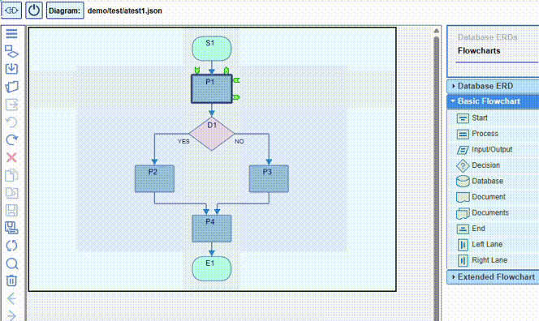
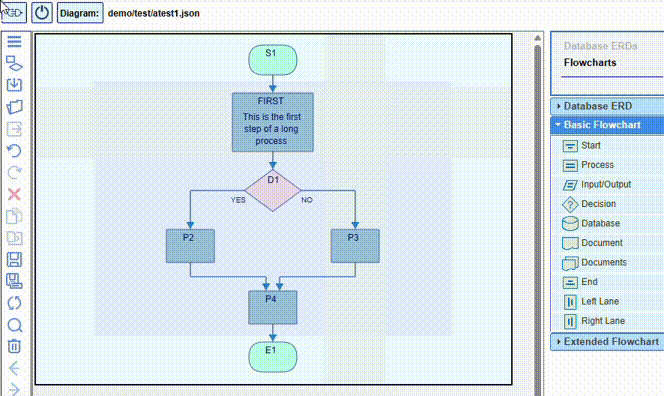
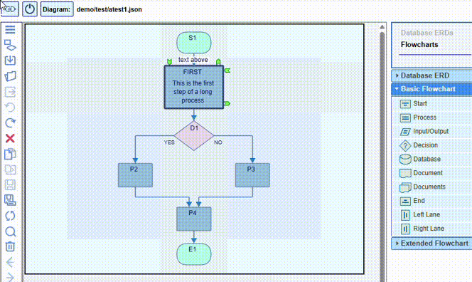

When moving the mouse over the node, two editable areas are visualized under the cursor: the node
name field and the node text content field. When double-clicking on any of them, the corresponding
text field opens, accepting the keyboard input for editing.
There are certain spelling rules
regarding the node name. In case of spelling mistakes, an error message comes up below the field.
Edits to these two fields are accepted by pressing the Enter key.
If the text content size is too large, use the context menu on the node
in order to compress the text to only two lines, or, if desired, to expand it back in full:

The editing of these fields can also be done within the Properties dialog invoked from the context menu on the node. Additional text can be attached to the node above and/or below its shape:

The Properties dialog also allows changes to the node colors, adding or removing an icon, as well as hiding or unhiding the node name:

Resizing the nodes horizontally and vertically is easily achieved by mouse dragging one of the sides or one of the corners. The larger sizes can be reset either individually from the node context menu or globally from the canvas context menu: